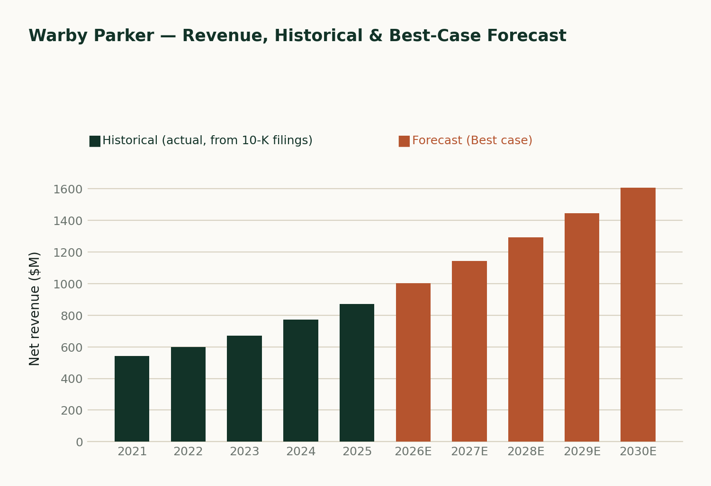
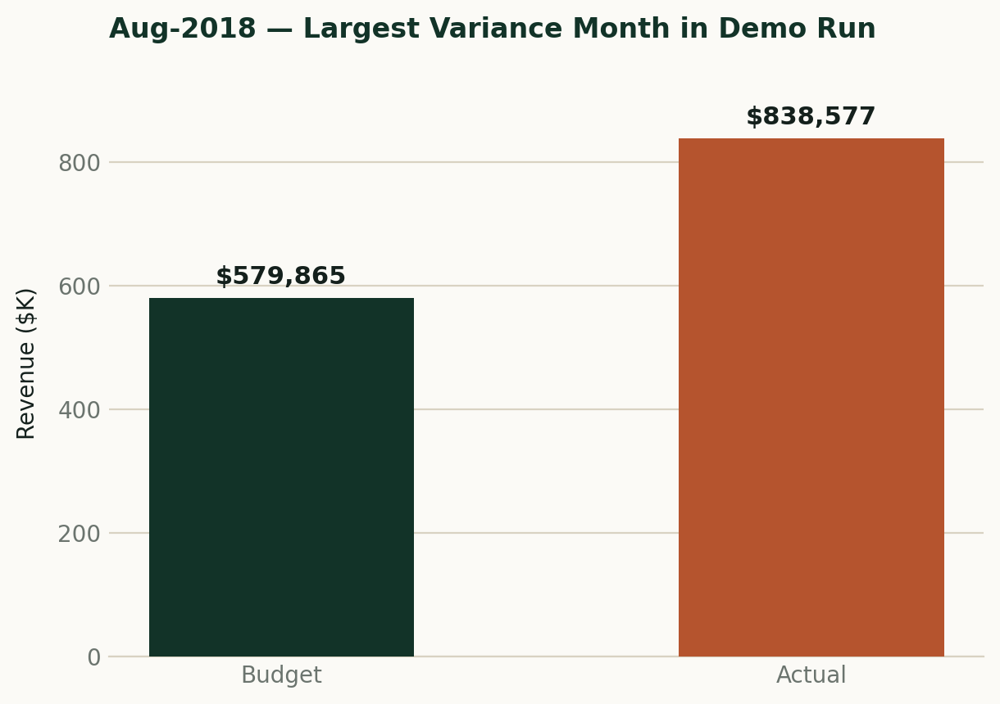
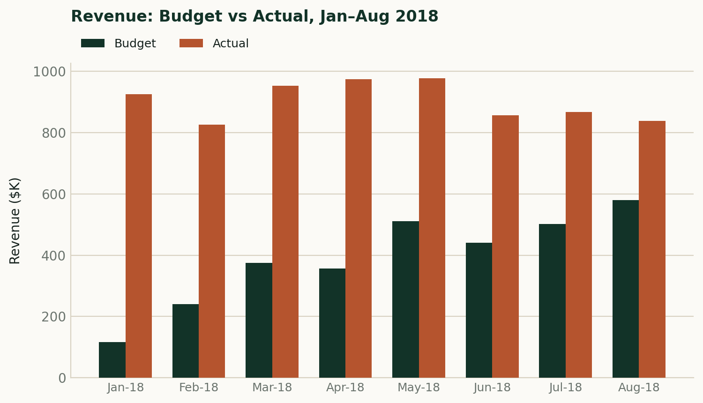
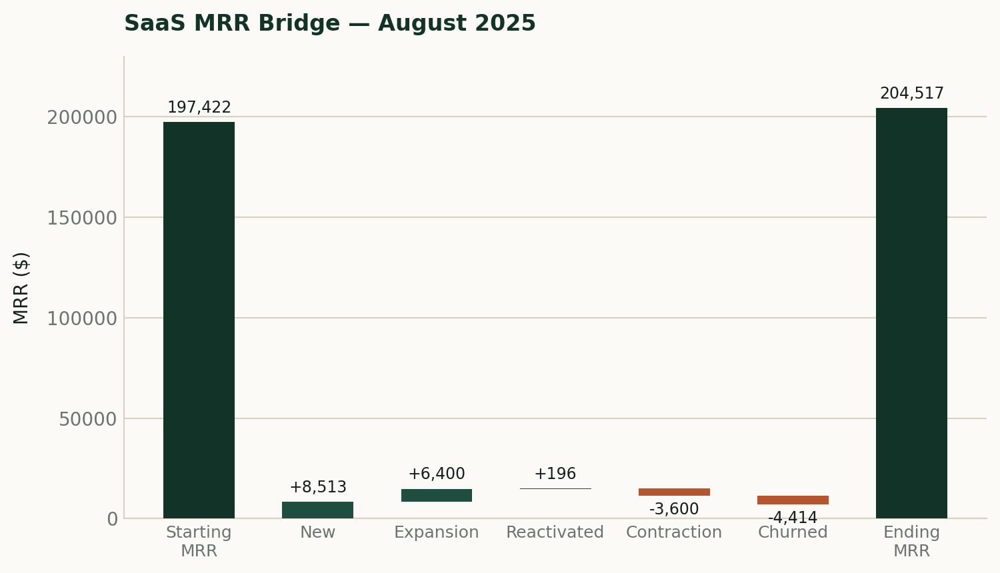
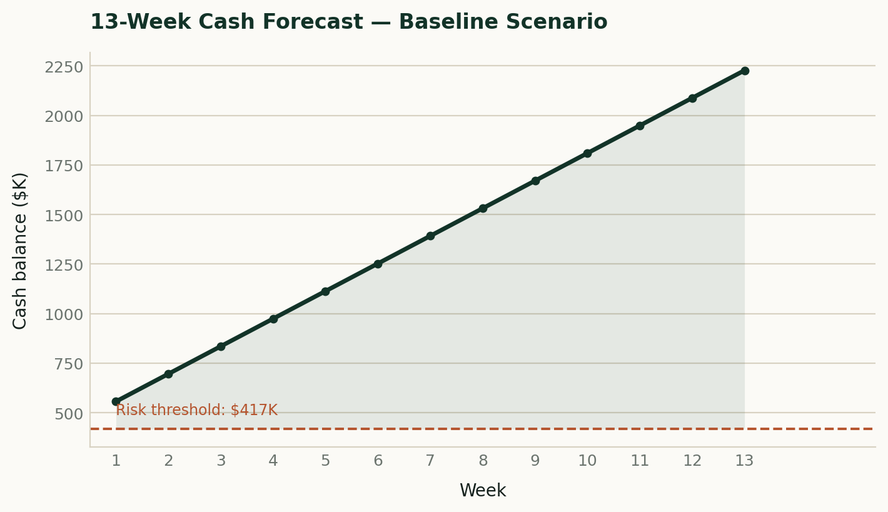
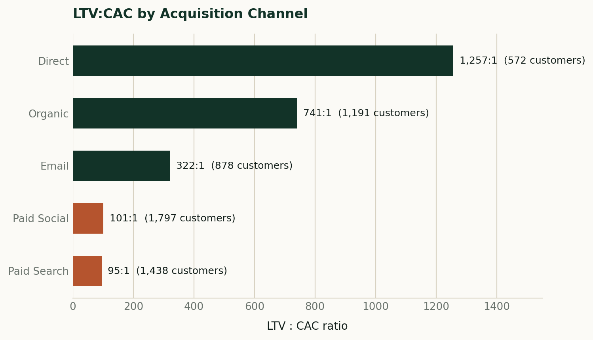

Chartered Accountant → FP&A
FP&A analyst for DTC and SaaS companies.
I'm Osaretin. Before I built a single forecast, I spent years learning what happens when a number is wrong. I build 3-statement models, cash forecasts, and variance analysis on real data, and I check every one against its source before I call it finished.
Open to remote, full-time, or contract FP&A roles
About
I trained as a Chartered Accountant. That meant years of learning what happens when a number is wrong, not just how to build one. It's the standard I still hold my models to.
I moved into FP&A because I wanted to work further up the chain. Not just recording what already happened, but building the models that help someone decide what to do next: which channel to fund, where cash gets tight, what a variance is actually telling you.
I focus on DTC and SaaS specifically because that discipline matters most there. These businesses run on judgment calls: how a cohort's retention curve will bend, how revenue should be recognized, what a channel's real contribution margin is once you strip out the noise. Someone trained to distrust a number until it reconciles is a genuine advantage in exactly those situations.
My projects are built on real data where I could get it: SEC filings, live e-commerce transactions, UK retail history. Where I had to assume something, I labeled it as an assumption.
Skills
What I bring to an FP&A seat.
Planning & Modeling
Building the model itself
- 3-statement modeling (IS / BS / CF)
- Scenario & sensitivity planning
- Driver-based revenue forecasting
- Rolling cash flow forecasting
- Working capital & AR/AP schedules
Analysis & Reporting
Turning the model into a decision
- Budget vs actual variance (PVM)
- Materiality-based flagging
- Cash runway analysis
- Board reporting & CFO-style memos
- KPI dashboarding
DTC & SaaS Metrics
Where I focus by industry
- Unit economics (LTV:CAC, payback)
- Cohort retention analysis
- MRR / ARR bridges
- NRR / GRR
- Contribution margin by channel
Tools & Systems
What I build with
- Excel — advanced
- SQL (MySQL)
- Python (pandas)
- Power BI (DAX, Power Query)
- SEC EDGAR data extraction
Certifications
Professional Credentials
Education
Supplementary Training
Experience
Real, hands-on work managing accounts, records, and customers, described by what I actually did.
Current
- Reconcile daily sales accounts and cash against service records
- Maintain accurate transaction and inventory records
- Handle customer service in a fast-paced, high-volume environment
- Tracked stock levels across the SKU catalog and flagged replenishment needs before stockouts
- Handled day-to-day sales transactions and kept accurate sales and inventory records
- Managed customer relationships and resolved complaints
- Negotiated and closed residential and commercial property transactions independently, end to end
- Built a client pipeline from cold outreach through signed deal
- Conducted property evaluations to support pricing and negotiation positions
- Taught mathematics to students at a range of levels, breaking complex problems into clear, structured steps
- Built explanations tailored to individual students rather than a single fixed method
Projects
FP&A models, each naming its data source and every assumption, so nothing here is dressed up as more real than it is.
Cash
Flags where cash runs tight before it becomes a crisis, not after.
Revenue
Shows which channel or cohort is underperforming, and by how much.
Reporting
Turns raw transactions into a board-ready number in one run.
3-Statement Model — Warby Parker (WRBY)
Shows public-company-grade modeling rigor
A full 3-statement model built from five years of Warby Parker's actual SEC 10-K filings. Forecasts income statement, balance sheet, and cash flow five years forward under Base, Best, and Worst scenarios. Every line traces back to a real filing.

Monthly Board Reporting Package
Shows reporting automation at operational scale
A six-script pipeline that validates data, computes KPIs and PVM variance, writes rule-based commentary, produces a rolling forecast, and assembles a board-ready PowerPoint deck. One command, start to finish.

Budget vs Actual Variance Analysis
Shows operational DTC finance, real transaction data
Driver-based variance analysis on real Olist e-commerce transaction data. Breaks revenue variance into Price, Volume, and Mix, flags material OpEx flux against a dual threshold, and outputs a CFO-style memo naming which categories to act on.

SaaS MRR Bridge & Cohort Retention
Shows SaaS-specific metrics and business partnering
An end-to-end SaaS FP&A workflow for Meridian Cloud Solutions: subscription-level movement classified in SQL, aggregated into a monthly MRR bridge, visualized on a board dashboard, and interpreted in a memo that names which cohort is underperforming and why.

13-Week Rolling Cash Flow Forecast
Shows cash runway analysis under stress
A rolling 13-week cash forecast for a DTC brand with in-house payment plans, built on real Olist transaction data. Models collection lag by payment type and stress-tests five real-world scenarios against a cash risk threshold.

Unit Economics Model
Shows which channel a business should fund or cut
LTV:CAC and payback period by marketing channel, built on real UK retail transaction data spanning 2009 to 2011. Real observed LTV, paired with clearly labeled CAC benchmark assumptions, to identify which channel actually pays back.

How I work
A model is only as good as the judgment behind it. This is the process I use on every project.
Step 1
Validate the source
Before I model anything, I check where the data actually comes from and whether it's complete. A model built on a bad extract is wrong before the first formula.
Step 2
Decide what's material
Not every variance deserves a paragraph. I set explicit dollar and percentage thresholds up front, so the analysis flags what actually matters and stays quiet on noise.
Step 3
Write it for the reader
A model that only I can read has failed. Every project ends in a memo or dashboard built for someone who wasn't in the spreadsheet with me.
Sample memo excerpt
Revenue came in $18,400 below budget for the month, but the story is mix, not demand. Unit volume beat plan by 6%. The gap is almost entirely price: the mid-tier SKU discount ran two weeks longer than planned, and it's the highest-volume line in the category.
Recommend closing the discount window on schedule next month before assuming a demand problem exists.
— Representative of my memo style